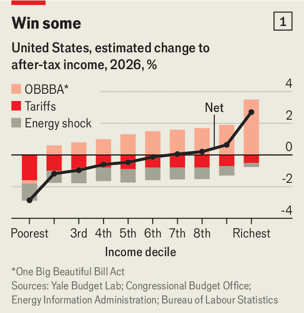
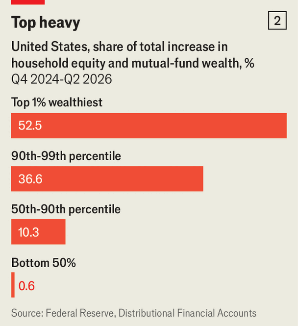

The winners and losers of Trumponomics
The president promised to help ordinary Americans. He achieved something rather different
Oct 29th 2026
ALL POPULISTS promise much to the working man, but Donald Trump predicted a golden age. Just before the election in 2024, he told voters they were days away from “the best jobs, the biggest paycheques and the brightest economic future the world has ever seen”. His unorthodox blend of tariffs, tax cuts and deportations, he claimed, would bring down living costs, revive America’s industrial heartland and restore middle-class prosperity.
Has the president delivered? On October 22nd the White House claimed his economic policies were driving up wages and fuelling a “blue-collar BOOM”. America’s economy is indeed growing briskly, with output on course to expand at an annualised rate of around 3% in the third quarter. But many of those Mr Trump claimed he would help have lost out, while richer Americans have gained.
The most politically toxic policies are those that have raised daily costs. The president’s sweeping tariffs have pushed up the cost of consumer goods by roughly 2%, according to the New York Fed. The Budget Lab at Yale estimates they will cost the average household $1,100 this year. The war in Iran has also sent oil prices soaring, and is set to add another $1,000 to the average household’s costs by year’s end.
Pushing in the other direction, Mr Trump’s flagship tax-and-spending law, the One Big Beautiful Bill Act, has boosted tax refunds by around $340 on average. The law also created “Trump accounts”, an effort to broaden ownership in the stock market, with eligible newborns entitled to $1,000 to invest in shares. But the biggest gains went to richer Americans through lower taxes, even as the act tightened access to food stamps—with more than 5m Americans losing benefits so far—and to Medicaid, the government health-care programme for the poor.

To tally the net effects of these gains and losses, The Economist combined estimates of the impact of tariffs, higher petrol prices and Mr Trump’s tax-and-spending law across income groups in 2026. We estimate that Mr Trump’s policies will cost the poorest tenth of American households, with average income after taxes and transfers of around $37,000, almost 3% of their income. The richest tenth, with average after-tax incomes of nearly $500,000, will gain nearly 3% (see chart 1). Households in the middle, with average income of roughly $100,000, lose more than $400. That does not account for the effect of a decision, taken by congressional Republicans last year and endorsed by Mr Trump, to let enhanced Obamacare subsidies expire. That has raised average premiums for individual insurance purchased on exchanges by nearly $800 a year, according to KFF, a health-policy research group.
Housing costs pose another problem for the president. Mortgage rates, pushed up in part by the inflationary effects of his war in Iran, have climbed above 7%, prompting existing owners to stay put. Adding new supply has become more costly. Last year builders estimated that tariffs on materials would add nearly $11,000 to the cost of a typical new home. His immigration crackdown is fuelling labour shortages, too; in September a survey from the National Association of Home Builders reported that labour costs were up by 4.2% from a year earlier. It is lower-income and middle-class voters, again, who are most pinched. In May sales of starter homes fell by 5.4% from a year earlier, even as luxury-home sales rose by 6.2%, according to Zillow, an online property firm.
When it comes to jobs, health care and social assistance have accounted for almost all private-sector gains since January 2025, to meet demand from America’s ageing population. The AI boom has been another bright spot, with data-centre investment creating roughly 180,000 new jobs in industries related to the build-out. In other sectors, though, private employment has barely budged. Annual wage growth across the private sector has slowed from 4% to 3%; rising inflation means that workers’ hourly pay is 0.7% lower in real terms than a year ago. Labour’s share of non-farm business output has fallen to its lowest level since records began in 1947 (changes to how business owners’ earnings are classified explain only some of the decline).
A renaissance in manufacturing jobs has been particularly elusive. Though manufacturing output has risen, manufacturing employment has fallen by some 20,000 since January 2025, while factory workers’ wages have failed to keep pace with inflation over the past year. In North Carolina, which Mr Trump won in 2024 and which now looks set to elect a Democrat to the Senate, nearly 9,000 factory jobs have disappeared over the past year.

Americans invested in the stock market have more to celebrate, as the AI bonanza has driven up the value of the S&P 500. But the impact is, once again, lopsided. Of the $17trn increase in Americans’ equity and mutual-fund wealth since the end of 2024, nearly 90% accrued to the richest tenth of households, compared with just 0.6% for the poorer half, according to data from the Federal Reserve (see chart 2).
These phenomena have not gone unnoticed. Nearly two-thirds of Americans think that Mr Trump’s economic policies have made conditions worse, according to a recent survey by the Pew Research Centre; the same is true of 35% of Republicans and Republican-leaning independents, nearly twice the share in January. Voters who are particularly affected by rising fuel costs and tariffs, such as farmers, are tilting towards Democrats. Mr Trump is now promising $5,000 to every adult citizen if Republicans retain control of Congress on November 3rd. That will do little to reassure voters who still feel left behind. ■
Stay on top of American politics with The US in brief, our daily newsletter with fast analysis of the most important political news, and Checks and Balance, a weekly note that examines the state of American democracy and the issues that matter to voters.